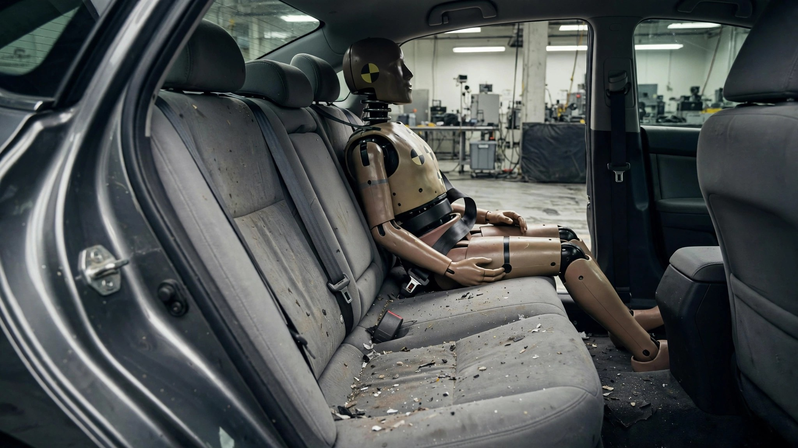

25,441 People Died in Cars That Just Failed a Test Nobody Was Running

For thirty years, the Insurance Institute for Highway Safety perfected crash tests that measured a single outcome: whether the person behind the steering wheel survived a frontal collision at 40 miles per hour. Airbags improved across three generations of technology, seat belts gained pretensioners and load limiters that carefully meter the forces acting on the human chest, and crumple zones evolved from a loose engineering suggestion into a precise, computer-modeled science that channels kinetic energy away from the occupant compartment. Through all of that relentless progress, through every dollar of R&D and every regulatory push, nobody put a crash-test dummy in the back seat.
In 2025, IIHS finally did. A 5th-percentile female Hybrid III dummy, representing a small woman or a 12-year-old child, now sits behind the driver during the moderate overlap frontal crash test, occupying the seat where your kid rides to school every morning, where your mother buckles in for a trip to the doctor's office, where you sit when you hand someone else the keys and trust that the vehicle's engineering will protect you just as well as it protects the person steering.
Results from that dummy landed like a verdict nobody in Detroit, Tokyo, or Seoul wanted to hear. America's best-selling sedan for two decades, the Toyota Camry, scored marginal because the rear dummy submarined beneath the lap belt during impact, with the nylon sliding off the strong pelvic bones into soft abdominal tissue where it can crush internal organs.[1] Nissan's Altima exhibited the same submarining failure, as did the Hyundai Sonata, the Kia K5, and every other midsize sedan IIHS tested except one. In every case, the front-seat dummy emerged from the crash with a textbook survival profile while the rear occupant would have faced a radically different outcome in a real collision.
SUVs fared no better, and the pattern cut deeper because these are the vehicles American families fill with children every morning. When IIHS ran its midsize-SUV cohort through this updated test, six vehicles earned poor ratings for rear-seat protection: the Honda Pilot, Hyundai Palisade, Jeep Grand Cherokee, Jeep Wrangler 4-door, Mazda CX-9, and Nissan Murano.[2] Among small SUVs, the Honda CR-V, Mazda CX-5, Hyundai Tucson, Buick Encore, and Jeep Renegade all failed to protect their rear-seated dummy from submarining, excessive head excursion toward the front seatback, or both. None of these vehicles submarined in the front seat, because the front seat has enjoyed three decades of engineering attention driven by crash tests that specifically evaluated front-seat survival and literally nothing else.
Cross-reference that IIHS failure list with NHTSA's Fatality Analysis Reporting System and a grim tally emerges from the aggregate data. Between 2014 and 2023, 25,441 people died in the specific vehicles that failed or scored marginal in the rear-seat evaluation. Camry alone accounts for 6,328 of those deaths at a fatality rate of 2.03 per 100 million vehicle miles traveled; Altima adds 4,787 at a rate of 2.88; Sentra contributes 2,571; and the CR-V, widely regarded as one of Honda's safest products, adds another 2,072 despite its low 0.53 fatality rate.[3] NHTSA's 2025 early estimate reports that roughly 14 percent of all traffic fatalities are passengers, which puts approximately 3,500 of those 25,441 deaths in seats that had never been evaluated by any crash-test protocol on earth until last year.
IIHS did not discover a new engineering problem when it placed that dummy behind the driver — what the institute discovered was that it hadn't been looking. Its own peer-reviewed research had already established the disparity: in vehicles built after model year 2007, belted rear-seat occupants face a 46 percent higher risk of fatal injury than those buckled in up front.[4] Not because rear seats deteriorated over time, but because frontal restraint technology improved dramatically while rear restraint design remained frozen at a baseline established in the early 1990s. Advanced seat belts with pretensioners and load limiters became standard equipment in every front seat sold in America; in rear seats they remain rare enough that IIHS senior research engineer Marcy Edwards called the gap “an opportunity to make big gains in a short time, since solutions that are already proven to work in the front can successfully be adapted for the rear.”
One manufacturer proved Edwards right before anyone else bothered to try. In the same test where the Camry, Altima, and Sonata all failed, the Honda Accord earned a good rating for rear-seat protection: no submarining, the lap belt anchored across the pelvis throughout the crash sequence, the shoulder belt centered on the chest, and the rear dummy's head held a safe distance from the front seatback by restraints that actually controlled its forward motion.[1] Honda solved, in one sedan, a problem the rest of the industry has treated as optional for a generation. Accord carries its own FARS burden with 7,102 deaths and a fatality rate of 3.07, worse than the Camry, but whatever is killing Accord occupants at highway speed, it is apparently not a rear restraint system that lets its passengers submarine into their own lap belts at 40 mph.
Subaru's Crosstrek illustrates the paradox from the opposite direction and reveals just how structural the fix can be. Gas-powered Crosstreks scored marginal in this rear-seat test despite the model owning the lowest fatality rate in the entire FARS database: 0.08 deaths per 100 million VMT across 86 total deaths in a decade of data.[5] But the Crosstrek Hybrid, built on a structurally different platform to accommodate its series-parallel powertrain and its heavier battery pack, passed with a good rating because that different architecture apparently solved the rear-seat geometry problem as a side effect of solving an entirely different engineering challenge. Same badge on the liftgate, different structure underneath, opposite outcomes for the person in the back seat.
If you ride in a rear seat regularly, or if you are choosing a vehicle for someone who does, the IIHS updated moderate overlap results at iihs.org represent the first real data point available to any consumer on whether the rear restraints in a given vehicle will actually hold their occupant in place during a frontal collision or whether the lap belt will slide off the pelvis and into the abdomen at the worst possible moment. Check those ratings before you sign a lease or hand your teenager the keys, because for the first time in the history of automotive crash testing, someone finally bothered to ask what happens to the person who isn't driving.
Sources & References
- IIHS, “Honda Accord shines while other midsize cars struggle in rear-seat safety test,” updated moderate overlap front test results for midsize cars. iihs.org/ratings
- IIHS, “Rear passenger protection falls short in most midsize SUVs,” updated moderate overlap front test results for midsize SUVs. iihs.org/ratings
- NHTSA, Fatality Analysis Reporting System (FARS), 2014–2023 aggregate data. nhtsa.gov
- IIHS, “Small cars falter in updated moderate overlap crash test,” research summary on rear-seat fatality risk in post-2007 vehicles. iihs.org
- autoevolution, “2026 Subaru Crosstrek Hybrid Deemed Safer Than Combustion-Only Sibling by the IIHS,” July 2026. autoevolution.com
Methodology note: Our 25,441-death figure sums all FARS-recorded occupant deaths from 2014 through 2023 for vehicles that received marginal or poor rear-seat ratings in the IIHS updated moderate overlap front test through July 2026, including all occupant deaths regardless of seating position because FARS model-level data does not distinguish between driver and passenger fatalities. Our estimate that approximately 3,500 of those deaths occurred in rear seats applies NHTSA's national passenger fatality share of roughly 14 percent, though the actual rear-seat share varies by vehicle type and crash configuration. IIHS's 46 percent rear-seat fatality risk premium derives from the institute's analysis of post-2007 model year vehicles and applies to belted occupants specifically.